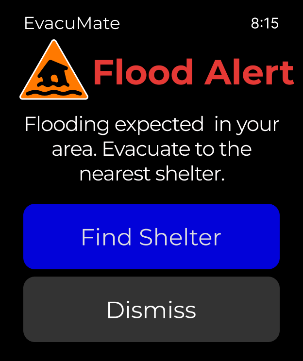
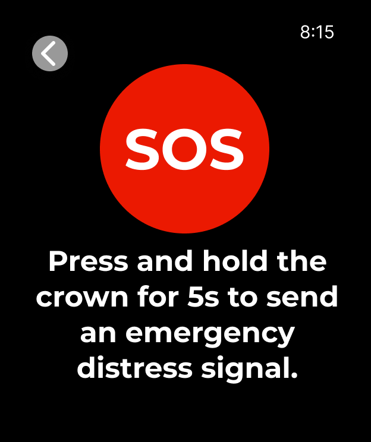
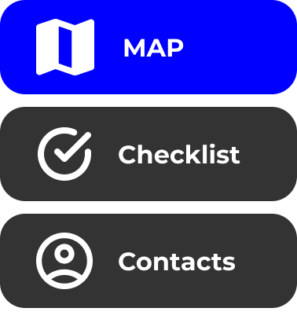
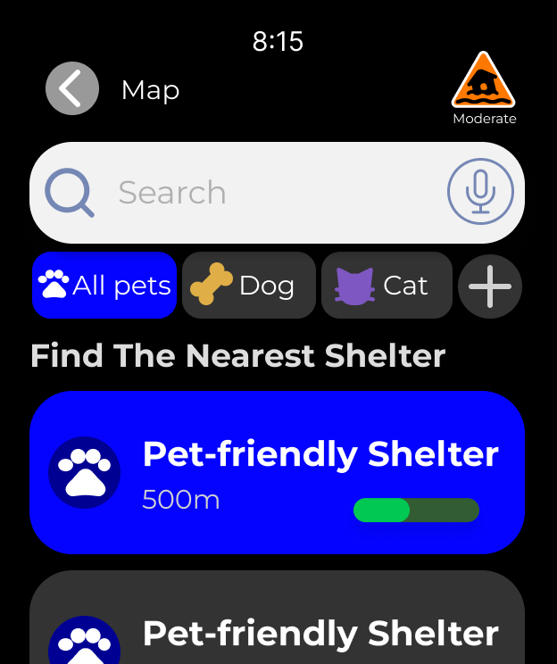

EvacuMate
洪水不会等你看完说明书。EvacuMate 是一款为宠物饲主设计的手表端应急指引应用—— 在信息过载、慌乱决策的几分钟里，用最少的点击完成求救、找到最近的宠物友好 避难所、确认逃生清单。

设计背景
洪灾中最容易被忽略的，往往不是"人怎么撤离"，而是"带着宠物怎么撤离"。研究显示， 很多宠物饲主在制定疏散计划时并未把宠物纳入考虑，即便动物的存在会显著影响撤离 决策（Quintana et al., 2025; Bansal et al., 2025; Taylor et al., 2015）。现有的 防灾类 App 大多只提供预警和清单，很少覆盖宠物的具体需求（Kangana et al., 2024）。
我选择智能手表作为载体，而不是手机：灾难发生时，手表始终戴在手腕上——不需要 翻包找手机，触觉震动能在慌乱环境里给出比手机推送更可靠的提醒，配合导航功能 可以直接引导饲主和宠物前往安全地点。
竞品分析
围绕"洪灾中的宠物防灾"这个方向，我把竞品分为三类做对比：
灾害预警类
Emergency+、My Bushfire Plan —— 侧重基于位置的预警推送和政府建议，但不涉及宠物。
宠物急救类
First Aid for Pets —— 提供动物急救指引和应急知识，但不覆盖撤离场景。
可穿戴应急功能
Apple Watch 紧急 SOS —— 具备实时警报、GPS 位置共享和触觉提醒，但同样是通用功能，没有针对宠物饲主的场景设计。
调研方式上，先在 App Store / Google Play 收集了各竞品的真实用户评价，再逐一梳理 每款产品的定位、核心功能、优势与短板。结论很明确：市面上没有一款产品，把"手表的 即时性"和"宠物饲主的撤离需求"放在一起解决——这正是 EvacuMate 要填的空白。
核心功能

SOS 一键求救
手表任意界面都能通过按住表冠触发紧急呼救，不需要先解锁再找入口。

首页四宫格
Map（避难所导航）/ Check List & Real-time Info（清单+实时预警）/ Contacts（联系人）—— 灾难发生时优先级最高的操作，一屏内全部可达。
联系人右滑呼出
主页右滑可以快速查看/编辑紧急联系人信息，支持电话和消息两种联系方式，多一种联系方式，救援成功率就高一分。

避难所地图
只保留和洪灾相关的图层，突出显示宠物友好避难所，标出距离、容量和可达性。
反思与收获
这个项目让我意识到，"好用"在日常场景和灾难场景下的定义完全不同：日常 App 追求的是信息丰富、路径灵活；而灾难场景下，用户的认知带宽被压缩到极限，界面 唯一的任务就是——用最少的信息、最少的点击，把人和宠物一起带到安全的地方。